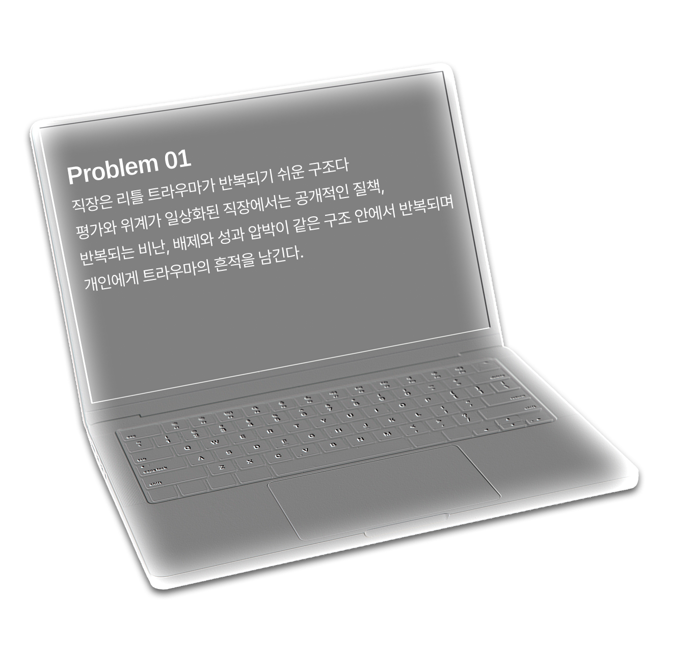
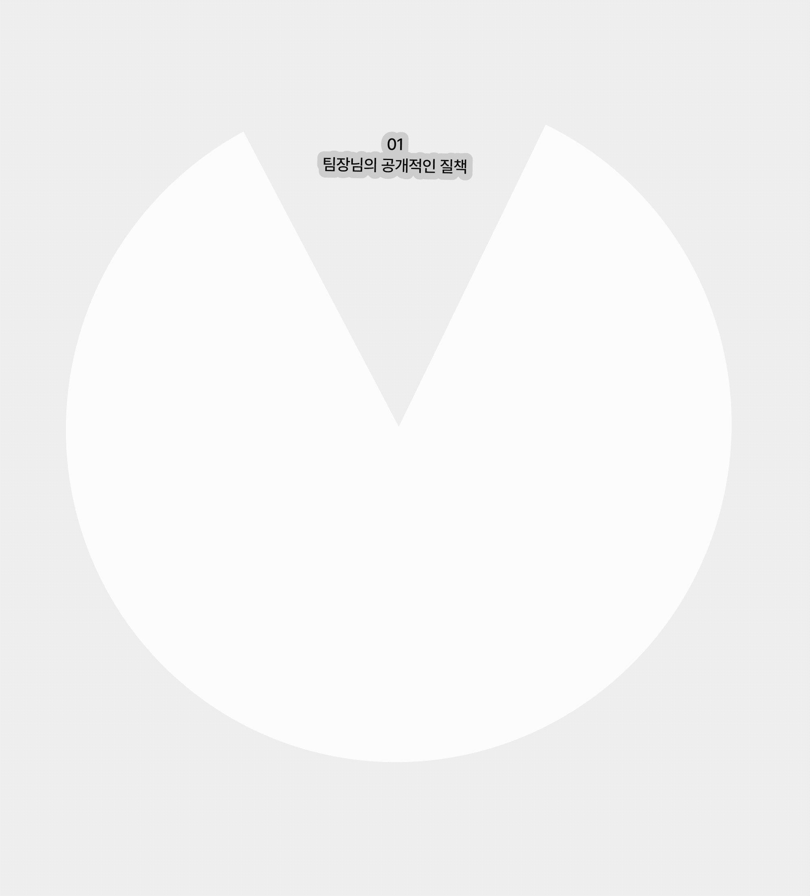
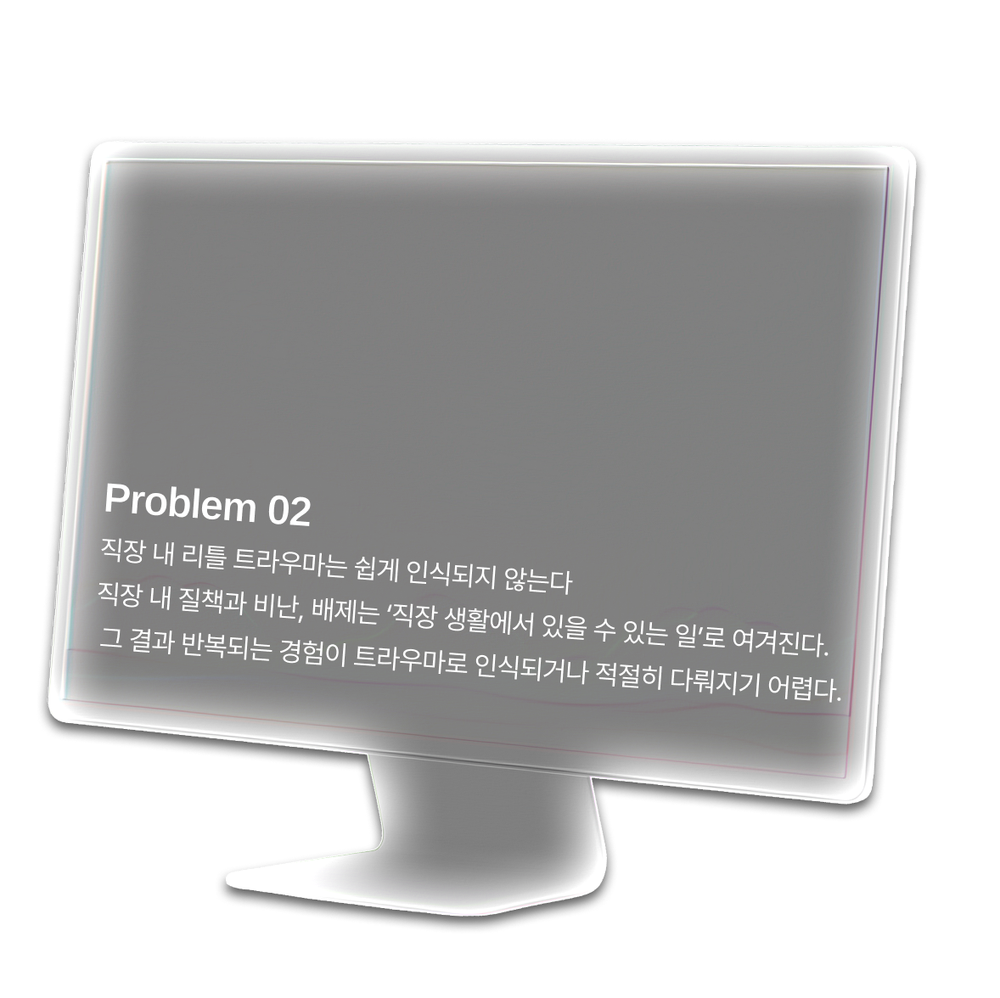
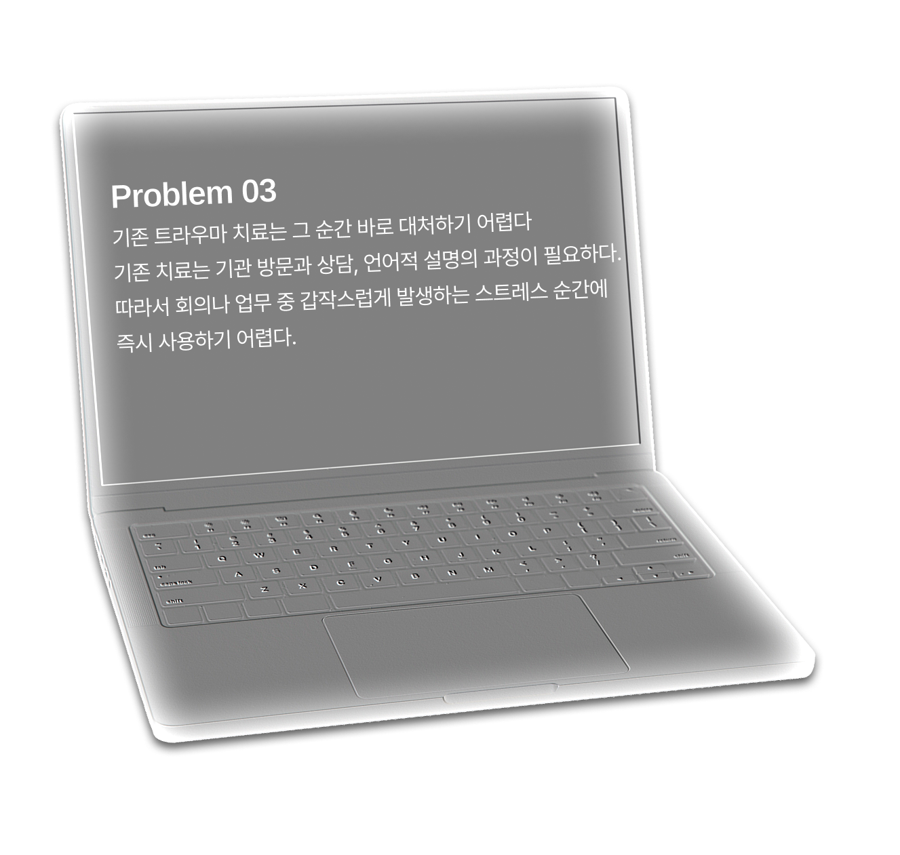
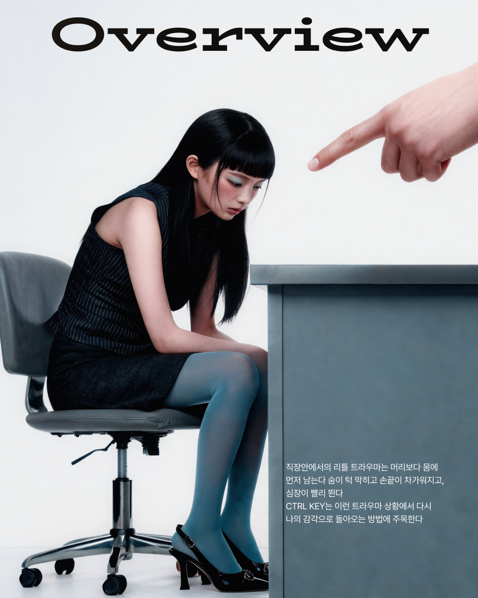
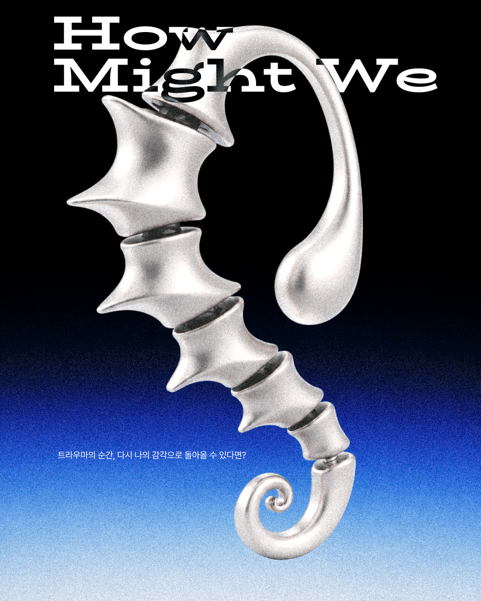
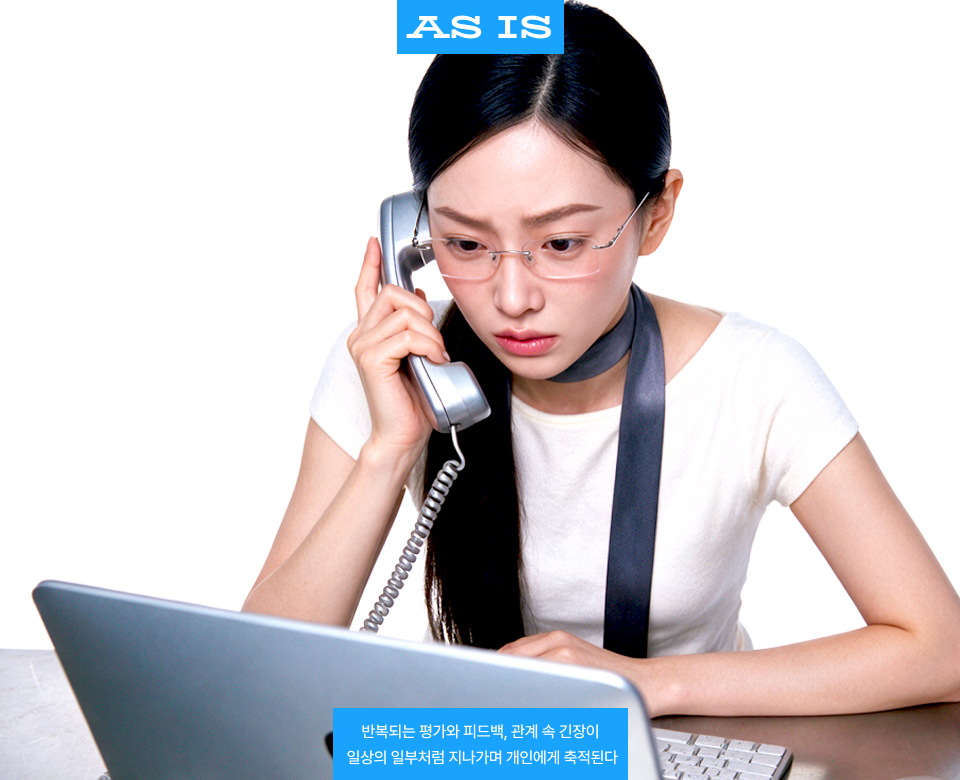
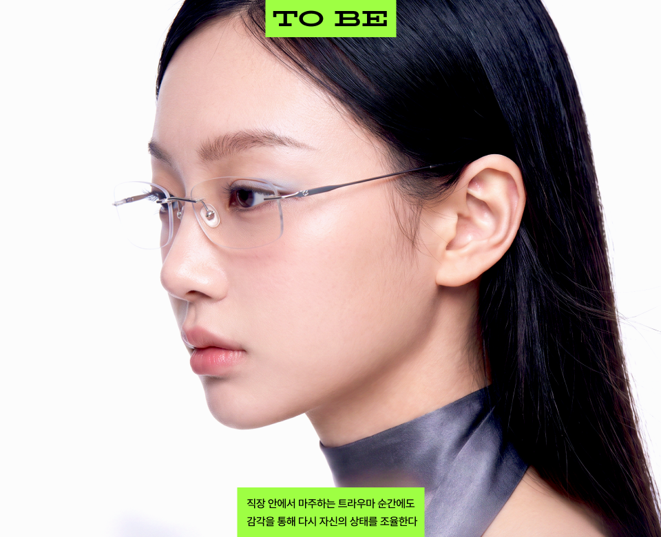
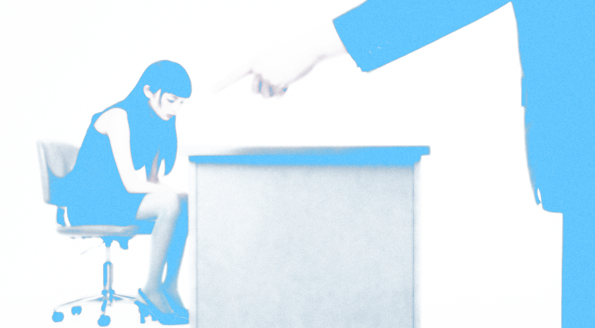

Overview
Ctrl key는 직장 안에서 반복되는 리틀 트라우마의 순간에 주목하는 웨어러블 브랜드다. 상사의 공개적인 질책, 팀 안에서의 배제, 반복되는 비난과 평가처럼 쉽게 지나간다고
여겨지는 순간들은 개인의 상태에 오래 남는다 Ctrl key는 그 순간을 피하게 하는 것이
아니라, 압력,온도,진동 같은 감각적 그라운딩을 통해 사용자가 다시 자신의
상태를
조율할 수 있도록 돕는다




Solution
그라운딩은 트라우마 상태에서 몸의 감각을 통해 '나는 지금 여기에 있다'를 인식하게 하는 심리학적 안정화 기법이다. Ctrl key는 이 기법을 귀에 착용하는 액세서리형 웨어러블로 전환한다. 압력, 온도, 진동, 저주파, 호흡의 감각을 통해 사용자가 트라우마의 순간에 다시 자신의 상태를 컨트롤할 수 있도록 돕는다.


Project Goal
From accumulated workplace stress to in-the-moment sensory regulation
Ctrl key는 직장 안에서 반복되는 작은 트리거가 보이지 않는 스트레스로 축적되는 순간에 주목한다.
참고 넘기는 경험이 아니라, 감각을 통해 그 자리에서 자신의 상태를 인식하고 조율하는 경험으로 전환한다

Strategy
트라우마 순간에 가장 가까이 작동하는 웨어러블
직장 안의 리틀 트라우마는 호흡, 심박, 체온, 긴장 같은 신체 반응으로 먼저 나타난다.
Ctrl key는 귀에 착용되는 웨어러블을 통해 그 순간 바로 감각 신호를 전달하고,
사용자가 다시 자신의 상태를 조율하도록 돕는다.